8. Trip to the South of Spain
8. Trip to the South of Spain
February 25 to March 7, 2022
Day 6, Antequera and arrival in Malaga
March 2, 2022
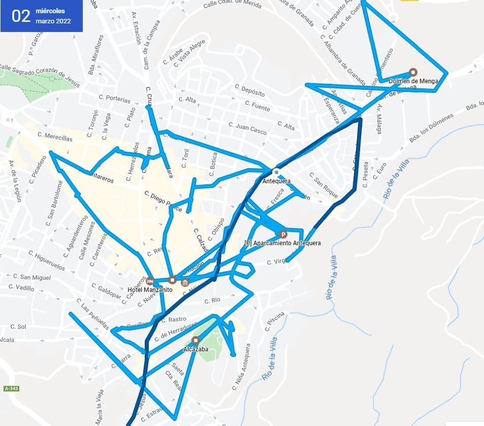


138. Antequera
138. Antequera
Antequera is the people of Malaga with more heritage and history of the province, including the capital however the environment is not as beautiful as it is around and does not give the Mediterranean Sea so those disadvantages have fact that has lost some importance.
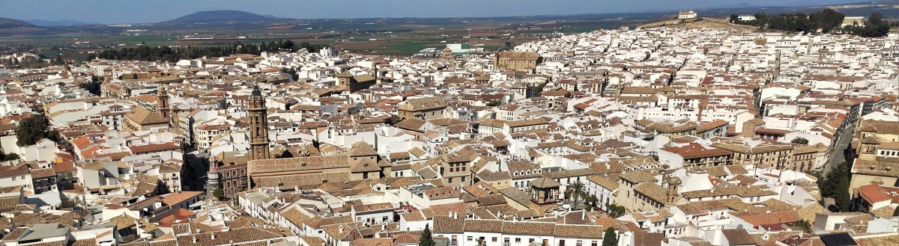
It has a great heritage, starting with remains of Iberians and Romans, preserved in a large museum, an Arab citadel, a collegiate church and numerous churches of interest, as well as a large number of palaces and noble houses. As if that were not enough, it has the best-preserved dolmens from the Neolithic period in Europe. That is why about 10 years ago they were included in the Unesco world heritage list, in which Spain already has 50 properties. For all this, it is a must if you go to Malaga.
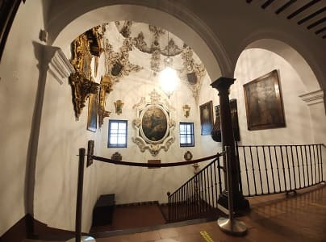
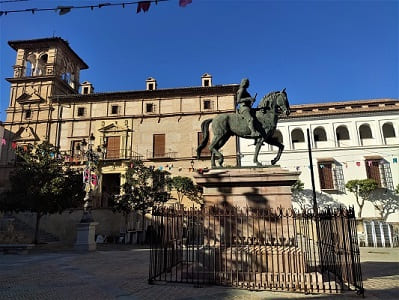
 The first thing I saw was the church of San Sebastian in front of my hotel. This church is very large and could well be worth a collegiate church or co-cathedral . It also has a wooden choir and large organs as well as several chapels, typical elements of cathedrals. Nearby is the Plaza del Coso Viejo, where the Santa Catalina de Siena convent is located, which contains a very curious altarpiece adorned with various shields. In front is the Nájera palace where the city museum is located. In this palace the highlight to see is the staircase with its dome and paintings as well as the patio. Within the museum, religious elements from the churches or the city or from its deposits of goods abound. Also a funerary urn where a coffin was found. The last floor is dedicated to a painter from this century who creates paintings based on other famous paintings but introduces changes.
The first thing I saw was the church of San Sebastian in front of my hotel. This church is very large and could well be worth a collegiate church or co-cathedral . It also has a wooden choir and large organs as well as several chapels, typical elements of cathedrals. Nearby is the Plaza del Coso Viejo, where the Santa Catalina de Siena convent is located, which contains a very curious altarpiece adorned with various shields. In front is the Nájera palace where the city museum is located. In this palace the highlight to see is the staircase with its dome and paintings as well as the patio. Within the museum, religious elements from the churches or the city or from its deposits of goods abound. Also a funerary urn where a coffin was found. The last floor is dedicated to a painter from this century who creates paintings based on other famous paintings but introduces changes.
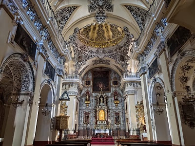
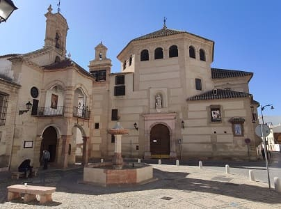
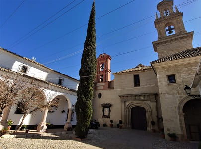
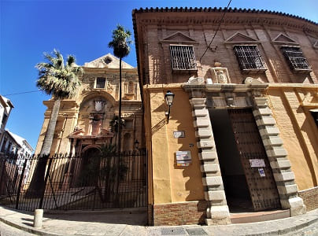
When leaving the museum I find the historical archive. I head towards the archaeological space of the dolmens, passing through spaces such as the municipal market, the Royal Monastery of San Zoilo, which contains a high-quality polychrome Mudejar coffered ceiling. This was founded by the community of Observant Franciscans (for this reason it is popularly known by the name of San Francisco) in the early years of the 16th century and with the patronage of the Catholic Monarchs and can be seen in the second image. You would continue to Plaza de Santiago , which is a happy achievement of 18th century Andalusian Baroque architecture and urbanism. The churches of Santiago and Santa Eufemia stand out as the most significant architectural elements, which show a curious contrast of volumetric concepts: Santiago, fragile and brittle in its porch and belfry, and Santa Eufemia, quite the opposite, with its enormous mass. and compact. with the church that has the walls painted as tapestries and the church of Santa Eufemia of great size. This church does not attract attention from the outside but inside it is one of the most beautiful in Antequera, being in the Baroque style. The foundation of this convent dates from the year 1601; However, the construction of its current church corresponds to the period of time that goes from 1739 to 1763.
Arriving at the dolmens site, I will first see the Viera dolmen, which is like a narrow cave, separated by the ancient dolmens and the Menga dolmen, the most spectacular, which preserves the only well discovered in the world from the Neolithic period, more than 3500 years before Christ, fully preserved (these two appear in the following images). This is due to the fact that the well was under the dolmen, which would in turn be buried, which has made this miraculous preservation possible.
The most fabulous dolmen is the Tholos del Romeral dolmen which is located outside this archaeological area and is like a circular cave. It is amazing that so many years ago these formations were built.
Once I had seen the dolmens, I went to see
the church of El Carmen.
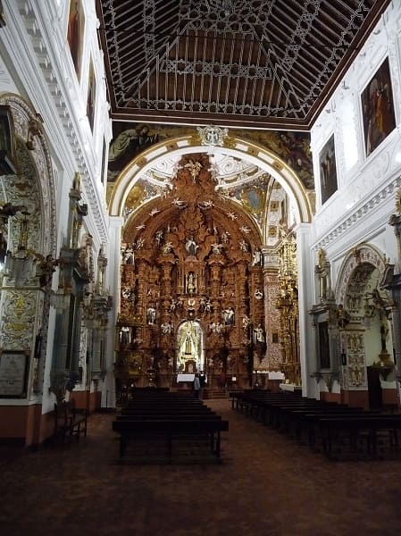
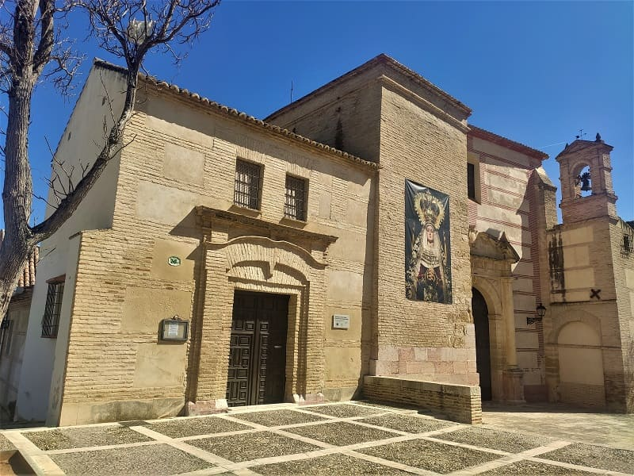
It is recognized as the most beautiful in Antequera due to its polychrome Mudejar coffered ceiling, its floor plan and its Baroque-style wooden altarpiece. The convent and church complex began to be built at the end of the 16th century, being completed in the first third of the following century.
The doorway of the temple, made of sandstone, opens by a semicircular arch marked out by half Tuscan columns on plinths that support the entablature and curved and split pediment. To the left of the portal, the first body of the now-defunct Torre del Gallo, which was demolished in 1883, is still preserved. The monumental Mudejar armor of the nave is dated between 1612 and 1614. The elevation of the nave and The main chapel develops an interesting architectural program of Mannerist progeny, highlighting the decoration of the half orange dome with its intertwined ribbons, garlands, masks and putti heads.
Having seen this church and the dolmens, you would see the other two jewels of Antequera,
the citadel and the Royal Collegiate Church of Santa María La Mayor.
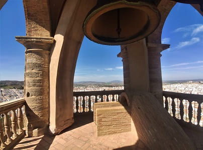
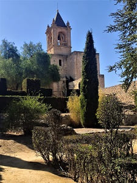
The entrance to the Alcazaba is paid but with a professor card the entrance to both places I think it was about 7 euros. The Alcazaba is recommended by the views, although inside you have little to see. Its origins can date from the Roman era, although it is mentioned for the first time in the writings of the eleventh century of Semuel Ibn Nagrella, Jewish poet of Badis, third king of the Taifa of Granada. This date coincides with the Almohade domination when two rings of walls that are currently standing were built. These walls avoided the conquest by the monarch of the Castilian crown Pedro I in 1361, being called "strong city." After this fact, the defenses were reinforced and a barbacana was built, doors were reedified and a coracha was built. Uploading to the Alcazaba you can see the archaeological remains of the Roman city of Antequera as seen in the image. The bell tower of the tribute tower that is seen in the image would be an addition after the Christian conquest.
From these remains several mosaics were removed in soils from different Roman buildings.
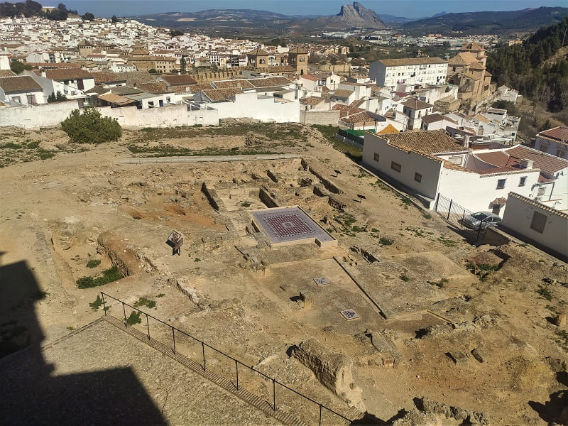
The collegiate is almost empty and is a very bland building but on the outside it is a large building. Right now it does not work as a church, more as a museum, which takes away the religious air. It is considered the first columnary church raised in Andalusia, and one of the first in Spain. Its construction is carried out between 1514 and 1550 and constitutes, therefore a first attempt at Renaissance architecture, at a time when the taste for Gothic was still in force in Spain, which undoubtedly refers to repeated pinnacles of the facade. It is undoubtedly the most important Renaissance building in the city. His impressive facade was articulated following a scheme of the triumphal arch but reinterpreted through medieval cathedral models. Let us remember in this sense different specimens of Tuscany, particularly the Orvieto Cathedral. The striated pinnacles reminiscent of the Venetian Gothic are of great singularity. The tower, located to the right of the facade, is a late construction of the seventeenth century that does not tune in with the style of the original work, even more the upper swords.
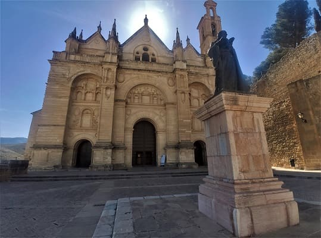
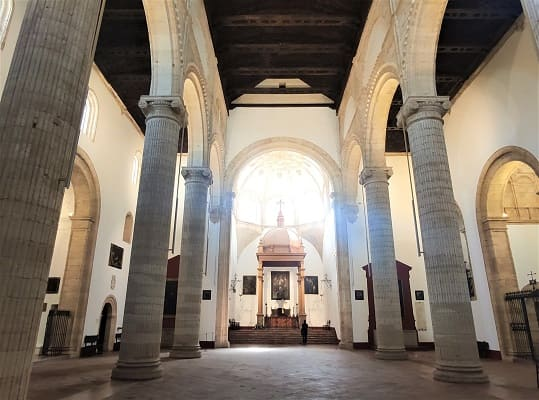
From above you can contemplate the entire city seeing the different towers of the churches and neighborhoods. The most important religious buildings that would later see are
the Brotherhood of the Christ of Las Aguas, the Church of Santa María de Jesús in the Plaza del Portichuelo, the Convent of Santo Domingo, the Church of Our Lady of Remedies, the Convent of the Mother of God and Monteagudo, the Church of the Blessed Trinity and the Church of San Pedro .
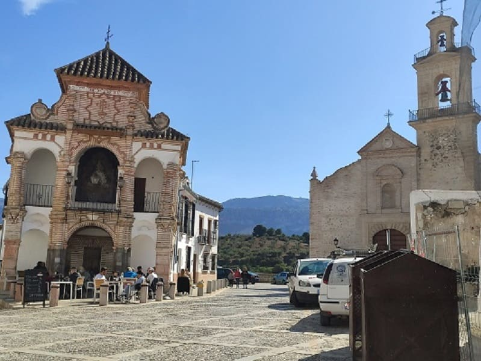
It is also worth seeing the courtyard of the City Council, former palace, which can be seen in the following image.
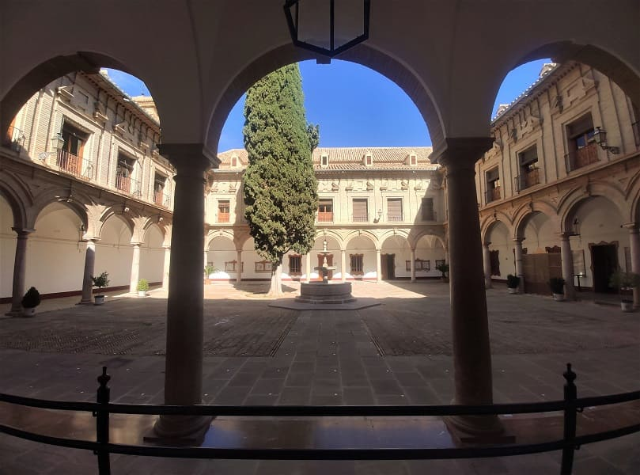
With all this, Antequera is a city with a lot of heritage but has no building that highlights a lot or that makes it special compared to other Andalusian cities. However, it has the dolmens that are unique in the world which gives it a special pull. That is why it is increasingly visited and its tourist potential is developing.
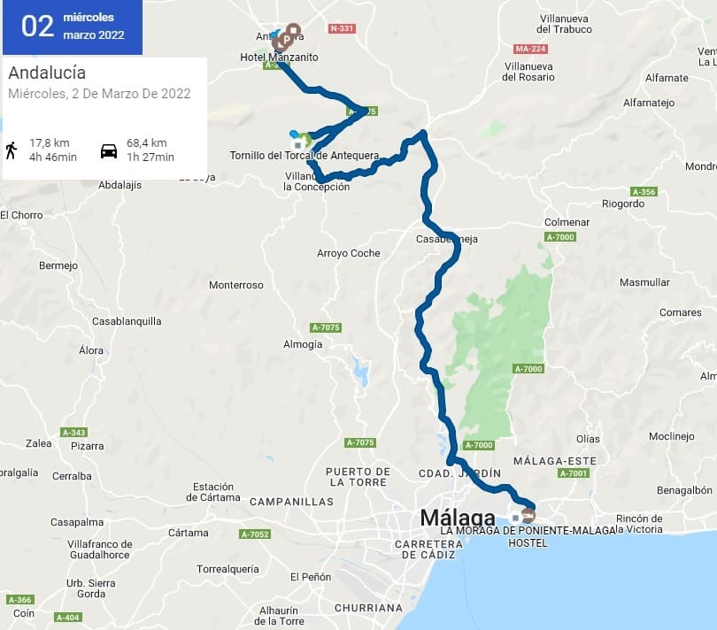
Already in the afternoon he would put his way to Malaga and in passing he would see the Natural Park of the Torcal. This park has unique rock formations because at another time the water covered everything and that area that was full of rock formation would receive its erosion leaving shapes that seem taken from another planet. There are many hiking routes in the area. When I was sunny and could be visited, however, as the wind was increasing, it was increasing and due to altitude, the climatic sensation can be very low. The best season to visit it is spring since in summer due to high temperatures is totally discouraged.
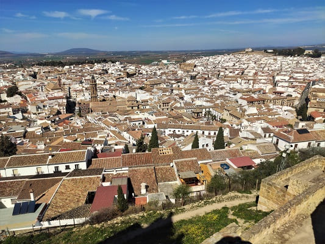
Dolmens 3500 a.c y alcazaba s.IX.
16
Day 7, see Malaga in one day (CLICK to continue)
March 3, 2022
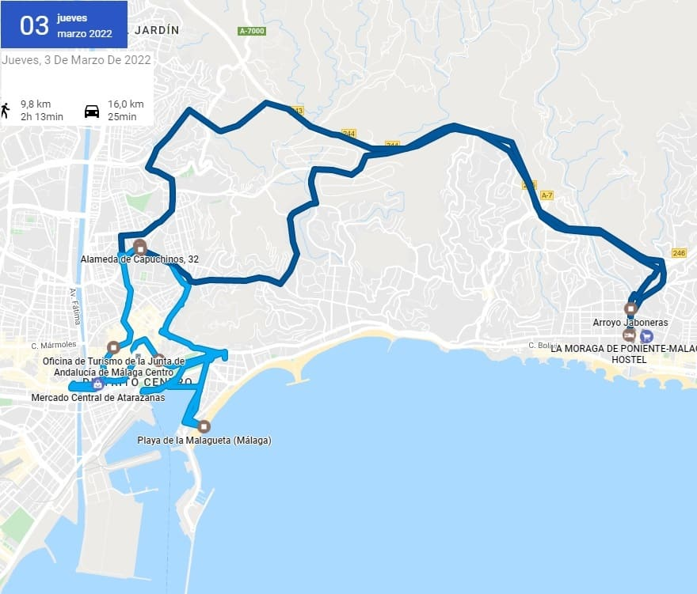
![[Valid RSS]](https://www.onepointsync.com/wp-content/uploads/2016/08/valid-rss-rogers.png "Validate my RSS feed")